Летний бэккантри-лагерь Ульзыха
(1-5 июня 2006)
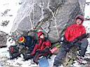
3 июня. Второй день в Баргузинских Альпах - попытка катануть кулуар Гигант. Погода ветренная, снежная. Передовая
четверка дошла до последнего из Зубьев Дракона, под шум лавин, сыпавших
со скал где-то рядом, в хорошей облачности. Выше был самый трудный и
лавиноопасный участок, но смертников среди нас не оказалось. Лично мне
спуска от верхнего Зуба хватило надолго :)
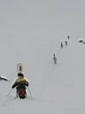
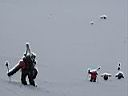
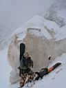
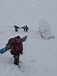
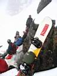
Подъем участников лагеря в кулуар Гигант, отдых у нижнего Зуба.
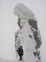
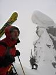
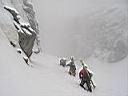
Подъем передовой четверки до верхнего Зуба.
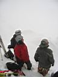
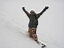
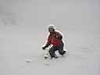
Спуск по кулуару Гигант.
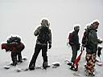
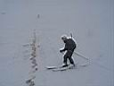
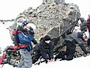
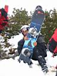
Далее все дружно свалили в безопасное место, поиграли в снежки, раскололи ледок на озере лыжами и сноубордом, и выкатили в лагерь. Надо сказать, что выкат был до самых палаток, возвращение в лагерь - катуха еще та! Все катальные дни палочки-выручалочки очень даже были к сноуборду на пологих участках :)
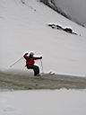
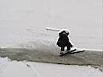
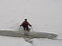
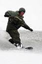
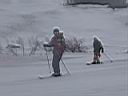
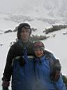
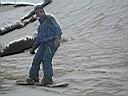
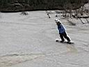
Из отчета Байкальского Экстрима :
...На третий день, разбившись на группы, население экстрим-лагеря переместилось в Звёздный цирк. Именно здесь находится один из самых интересных и сложных объектов - кулуар Гигант. Мало кто, за всю 10-летнюю историю освоения этого района, может похвастаться тем, что смог скатиться по этому крутому, опасному маршруту. Снегопад, абсолютная невидимость, предостерегающий шум мокрых лавин не способствовал пополнению этого не большого списка. Хотя, попытка была... Группа сильнейших в составе Климова Сергея, Гарматарова Чингза (Улан-Удэ). Нестеренко Андрея, Жукова Андрея (Ангарск) и Белокрылова Алексея (Слюдянка), всё-таки вышла к верхним зубьям. Потыкав полуметровый свежий, тяжёлый снег, они в полной белой мгле и под грохот лавин, благоразумно скатились к озеру Гитара. Вот здесь то и решено было погонять по частично растаявшему горному водоёму...
А впереди еще один день катания !
Продолжение...
.